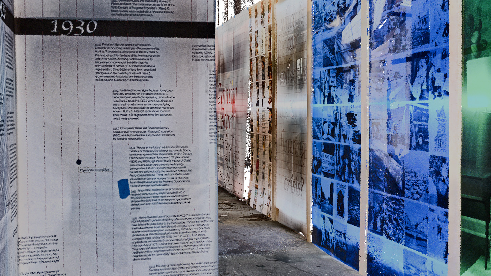
EIPC documented the Liberty Research Annex, a key satellite facility of Taubman College of Architecture and Urban Planning that supports faculty-led research and public engagement. Located just off campus in downtown Ann Arbor, the Annex hosts exhibitions, final reviews, and celebrations of work from Taubman fellows, providing a flexible and experimental space for both scholarly and creative output. The scan aimed to capture the building’s spatial configuration and exhibition infrastructure, creating a baseline digital model that can be used for planning, archival, or visualization purposes. This project underscores the importance of documenting dynamic academic spaces that serve as both sites of production and platforms for presentation.
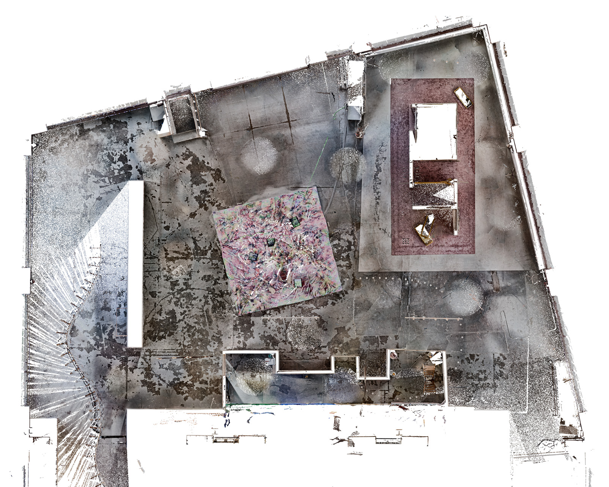
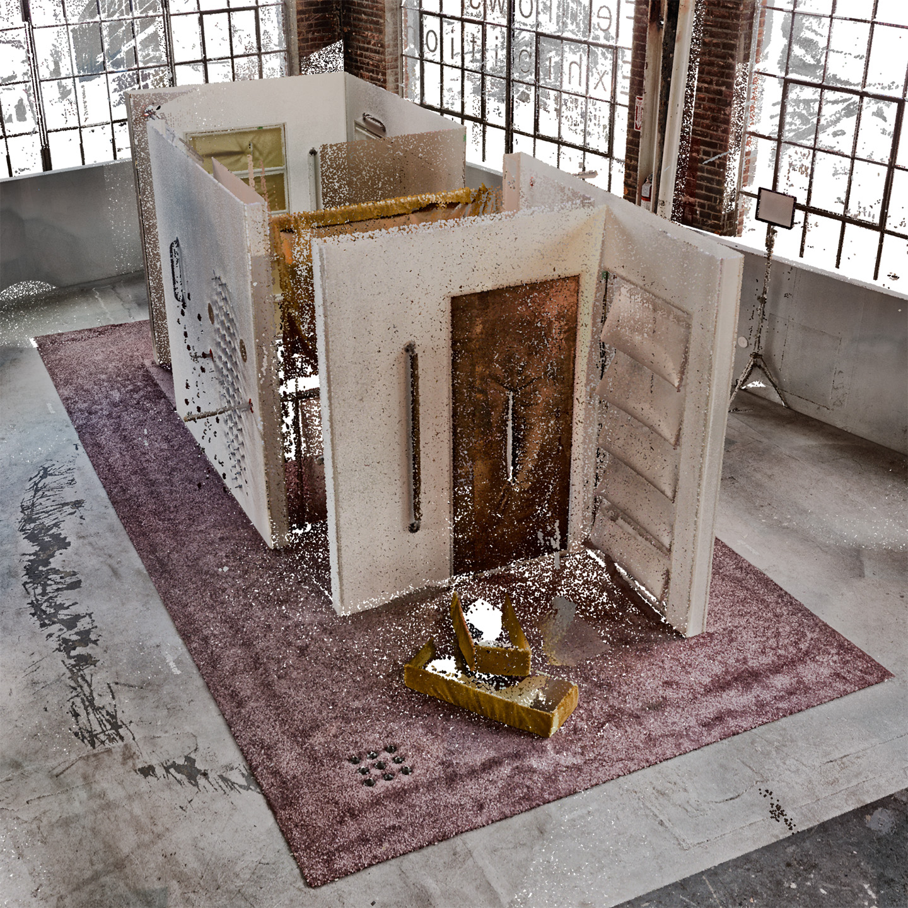
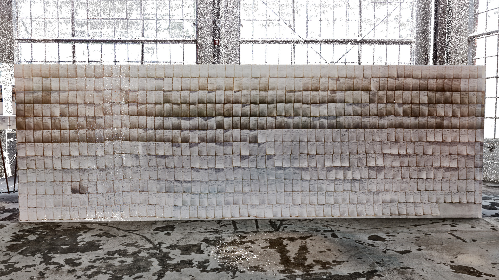
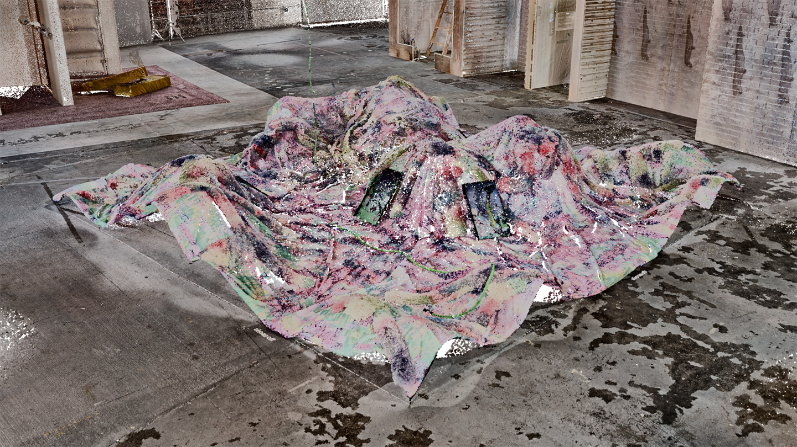
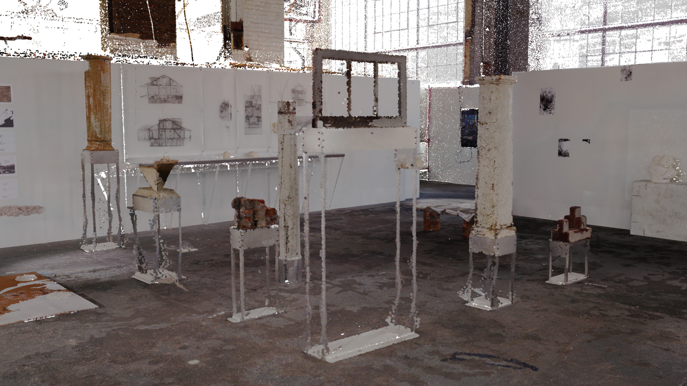
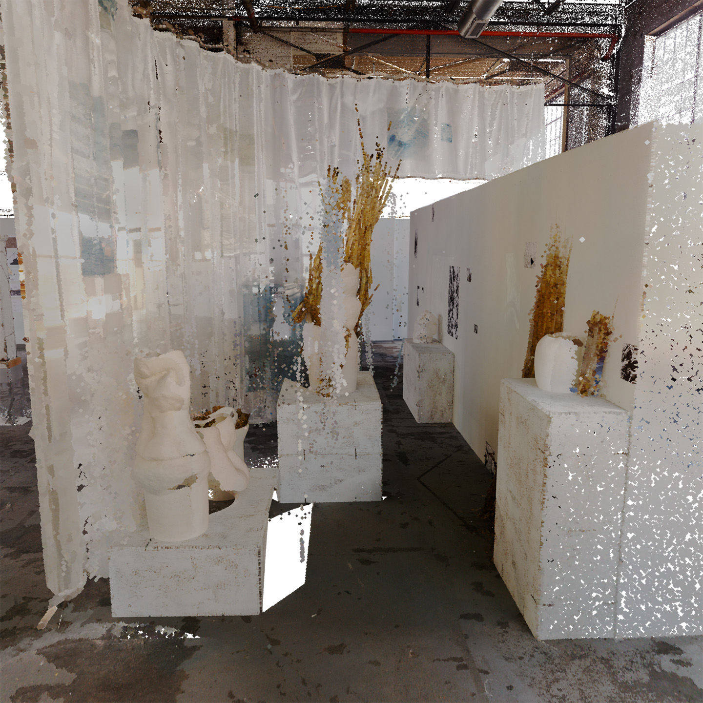
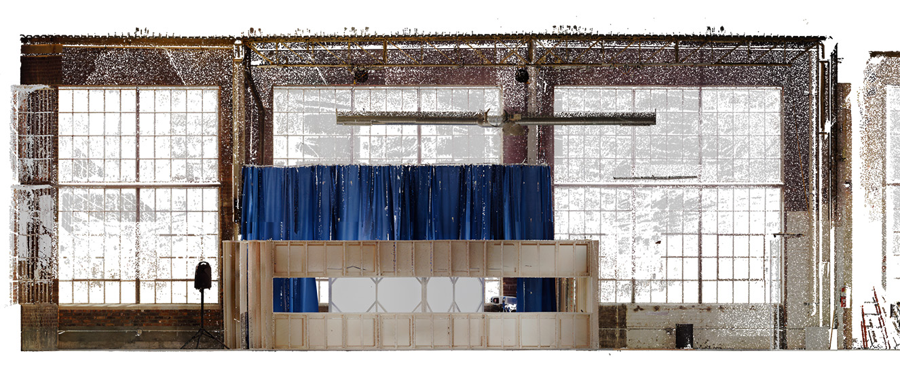
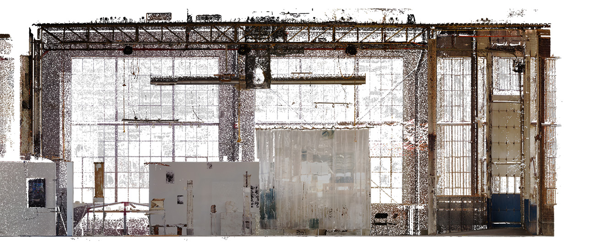
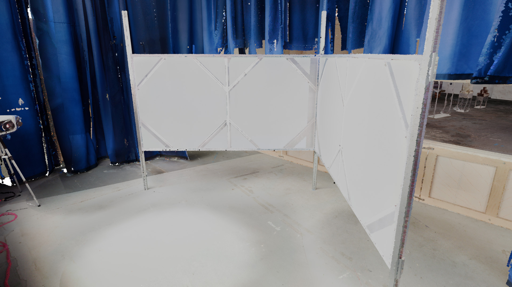
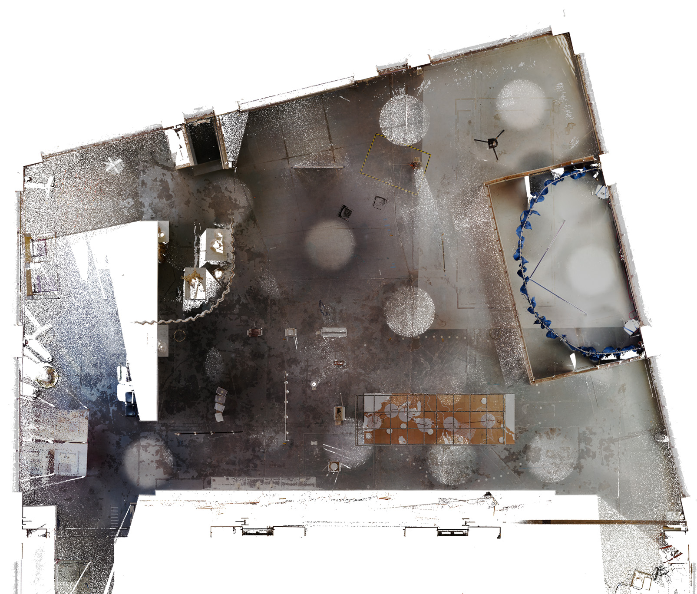